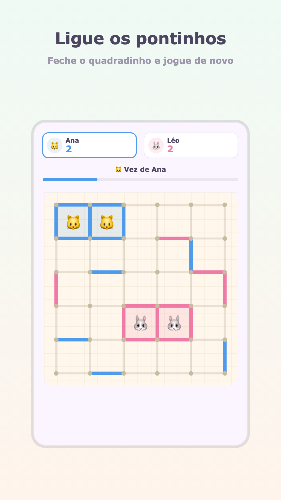
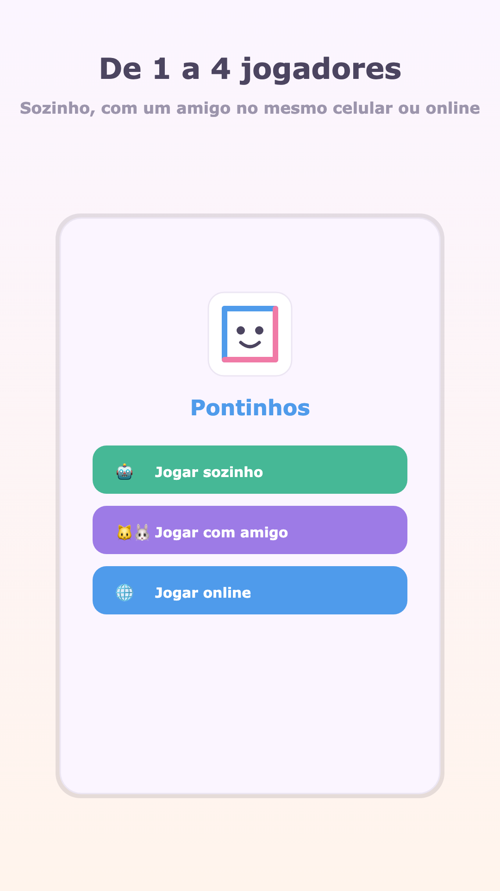
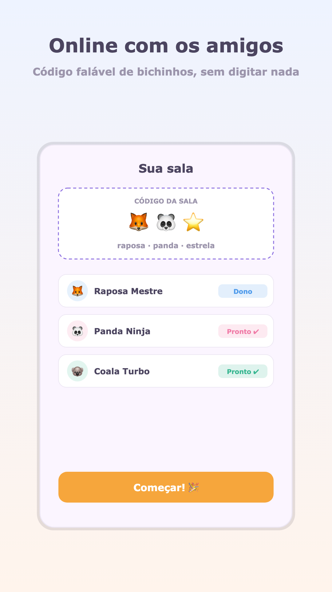
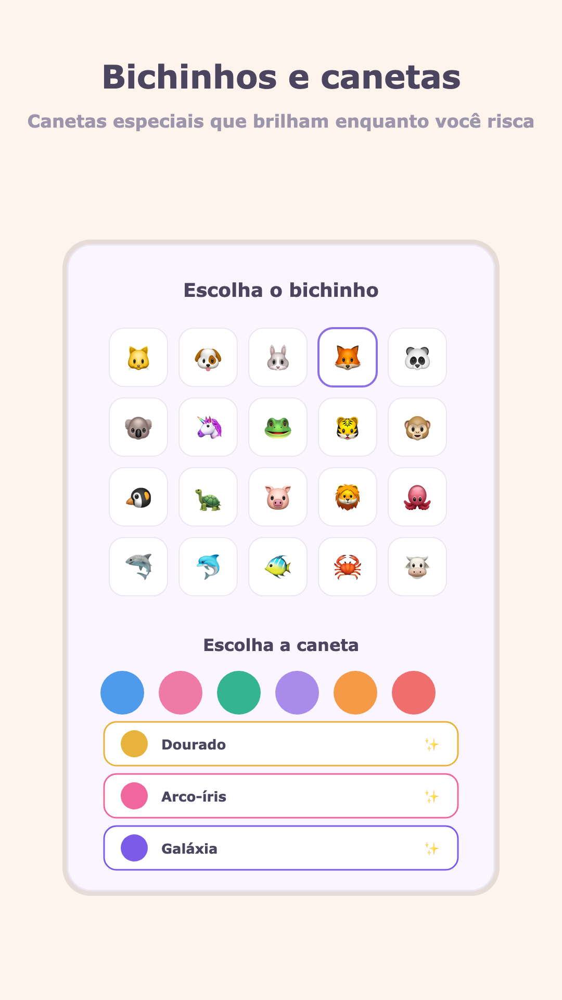
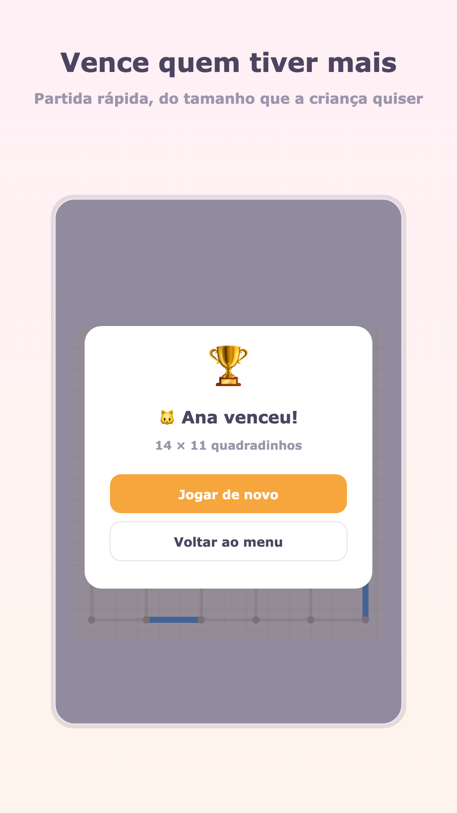

Como se joga
- Os jogadores se revezam ligando dois pontinhos vizinhos, com um risquinho na horizontal ou na vertical.
- Quem completar o quarto lado de um quadradinho ganha o quadradinho — ele é marcado com o seu bichinho.
- Quem fecha um quadradinho joga de novo. Dá para fechar vários seguidos.
- Quando não sobra nenhum risquinho, vence quem tiver mais quadradinhos.
É o mesmo jogo que se faz no caderno da escola. Em outros países ele é conhecido como dots and boxes, timbiriche ou jogo dos quadradinhos.
Três jeitos de jogar
Sozinho, contra o robô
Três níveis. O Fácil deixa você ganhar, o Difícil joga a estratégia de verdade do jogo — e é osso duro.
Com um amigo, no mesmo aparelho
Dois jogadores revezando no mesmo celular. Sem internet, sem segundo aparelho, sem cadastro.
Online, até 4 jogadores
Cada sala tem um código de três bichinhos, tipo 🦊🐼⭐, fácil de falar em voz alta para o amigo entrar.
Como é o jogo





Perguntas frequentes
Precisa instalar alguma coisa?
Não. O botão "Jogar agora" abre o jogo direto no navegador, no celular ou no computador. A versão para Android existe para quem quiser jogar sem abrir o navegador e também offline.
É grátis mesmo?
Sim. No navegador não há nada a pagar e nenhum anúncio. O aplicativo Android é gratuito e exibe anúncios.
Dá para jogar duas pessoas no mesmo celular?
Dá, e é o modo mais usado. As duas pessoas se revezam tocando na mesma tela — não precisa de internet nem de um segundo aparelho.
Precisa criar conta ou digitar nome?
Não. Até no modo online o apelido é sorteado — algo como "Raposa Foguete". Ninguém digita texto em lugar nenhum do jogo.
Serve para que idade?
Foi feito para crianças de 6 a 12 anos, com visual grande e colorido e sem nada para ler além do essencial. Adulto que jogava no caderno também se diverte, principalmente contra o robô no nível Difícil.
Em quais idiomas está?
Português, inglês, espanhol, hindi e indonésio. O jogo escolhe sozinho pelo idioma do aparelho, e dá para trocar no botão 🌐 do menu.